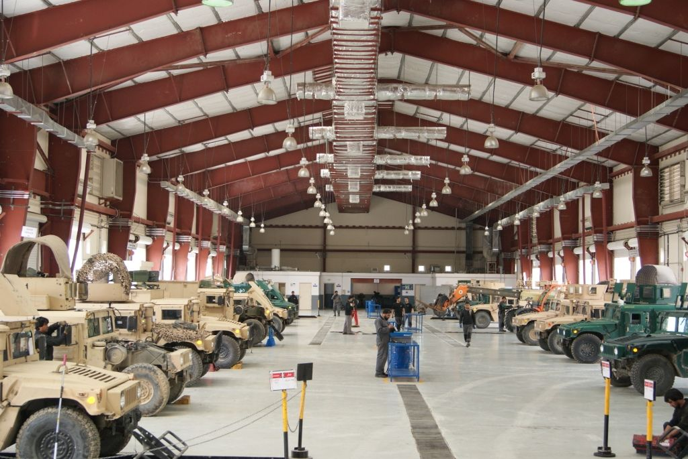
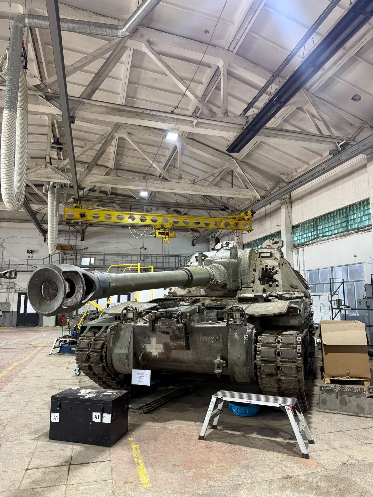
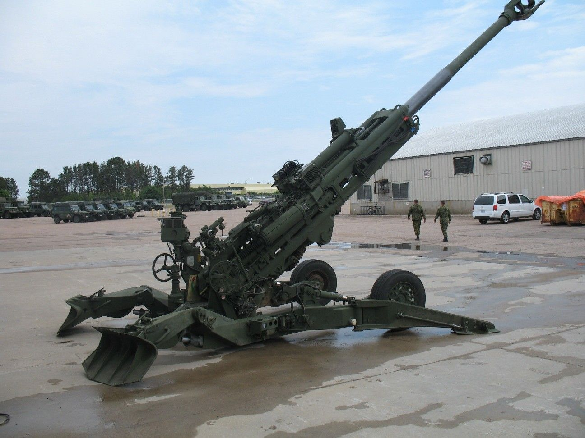

Prevent
Scheduled maintenance and preventive repair that reduce the likelihood of failure before it affects availability.

AMS / Sustainment & MRO
Core service 01
Readiness, protected over time.
What we do
For more than two decades, AMS has sustained wheeled, tracked, artillery and maritime platforms in some of the world's most demanding environments, including active and post-conflict theatres.
We measure our work by availability, not activity. We bring sustainment to the point of use, on bases, in theatre and at forward locations, so platforms stay in service instead of waiting to be shipped back.
We deliver scheduled and unscheduled maintenance, repair, and overhaul services for defence platforms – from routine servicing through to complex component repair and full platform rebuild.


The problem we solve
Our approach
Scheduled maintenance and preventive repair that reduce the likelihood of failure before it affects availability.
Battle damage repair, reset programmes and full overhaul that return platforms to original standard.
Technology integration and upgrades that extend platform life and keep pace with changing requirements.
OEM alignment
We work alongside OEMs on parts supply and technical standards, and document every job to military standards.
Configuration control and approved weld repair protect technical integrity, so every platform leaves our care performing the way it was designed to.
How we deliver
Battle damage and condition assessment.
Moving the platform safely to a repair facility.
Major and minor repair, including approved weld repair.
Rebuilding assemblies and systems to original standard.
Testing and calibration before release.
Back to the operator, ready for use.
Continued engineering and OEM support once deployed.
Platforms supported
Track record
| Programme | Customer | Dates | Outcome |
|---|---|---|---|
| Six live sustainment projects, Ukraine | With BAE Systems, Bofors and UK MoD | Current | Readiness restored for artillery, wheeled and maritime platforms of the Armed Forces of Ukraine. |
| Project Eligius | UK MoD | 2023–present | Depot-level sustainment keeping Ukraine's air defence systems in service. |
| UNSOS | United Nations | 2012–present | 2,000+ assets, including armoured vehicles, kept mission-ready in Somalia. |
| NMS-GVS | US Army | 2017–2021 | 130,000+ assets sustained across every Forward Operating Base for the Afghan Army and Police, at 95%+ readiness. |
| A-TEMP | US Army | 2010–2017 | 98% readiness for 32,000 assets across 34 provinces, with 28 fixed and 64 mobile teams. |
| Transportation Motor Pool | US Army | 2011–2016 | 3,000+ assets kept mission-ready for US Forces Afghanistan. |
| Fleet and vehicle services, Central Asia | US Army, CACI, Amentum | 2016–2021 | Fleet availability sustained across multiple sites. |
How we protect readiness
Our services work independently or together as a system, giving consistency, control and continuity across the in-service lifecycle.
Next step
Tell us about your platforms and where they operate. We'll show you how we'd protect their readiness.
Remove complexity. Protect readiness.